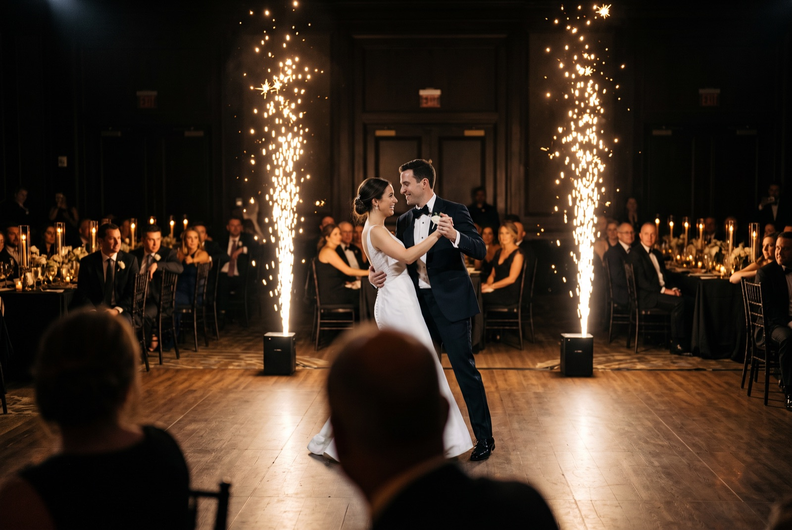
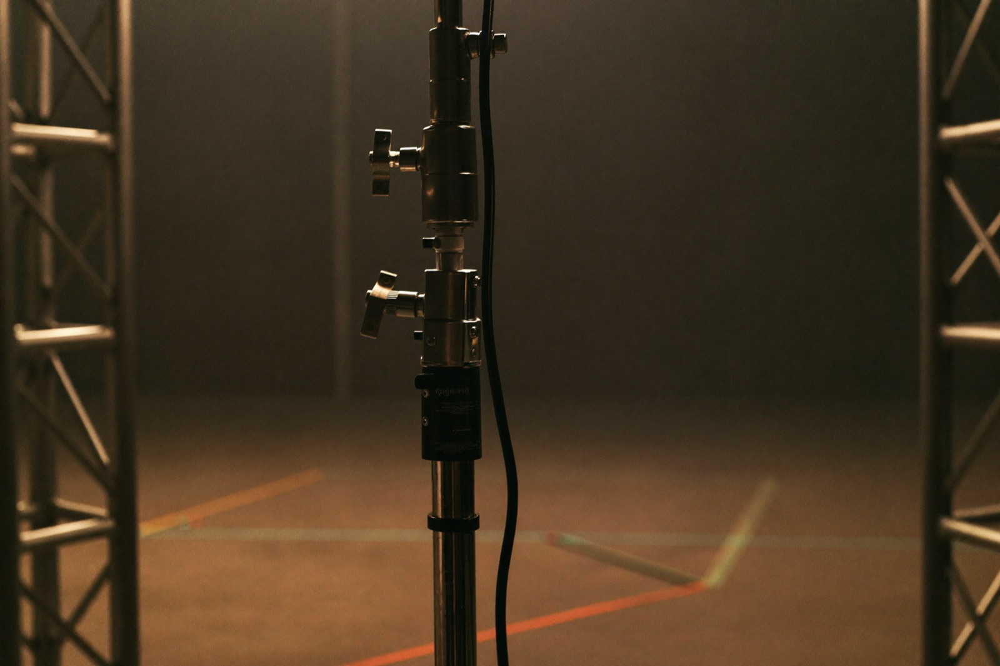

The lights drop. The DJ pulls the music down for a second. Then the doors open, the couple walks in, and two tall fountains of silver sparks shoot up on either side of them. Every phone in the room goes up at the same time. That is a cold spark machine doing exactly what you hoped it would. It takes a moment you already planned and makes the whole room lean in.
If you are thinking about a cold spark machine rental in Miami for a wedding, a quinceañera, or a stage reveal, here is what it actually is, where it works, and what to ask before you book one.

What a Cold Spark Machine Actually Is
A cold spark machine is a compact unit that fires a controlled fountain of bright sparks into the air, anywhere from a few feet up to fifteen or higher depending on the model. The sparks look like fireworks. They are not fireworks. The effect runs cool enough that you could hold your hand near the top of the fountain and not get burned, and that is the entire reason it works where real pyro never could.
That one difference is why you see these at indoor Miami events all the time now. A ballroom with a chandelier and a sprinkler system is a hard no for anything with an open flame. A cold spark machine sits in that same room and throws sparks toward the ceiling without setting off an alarm or scorching a thing.
Rental is the word that matters here. You need the effect for one entrance or one first dance, not for the rest of the year. A cold spark machine rental in Miami means the unit shows up loaded and tested, someone places it where it is safe and where it reads on camera, and it fires on the cue that counts instead of a beat too early.
What It Looks Like at Real Miami Events
On the wedding side, the two big moments are the grand entrance and the first dance. Sparks framing the couple as they walk into a Coral Gables ballroom. A single fountain rising behind them during the first dance so the photos have that glow built in instead of a flat backdrop. Pair it with our CO2 jets on the dance floor later and the night has two separate peaks people remember. If the first dance is the main event for you, we wrote a wedding-focused look at cold sparks and the first dance too.
Quinceañeras lean on this hard. The entrance, the vals, the surprise dance, all of it hits harder with sparks marking the moment. Families in Miami plan these nights for years, and that one visual is often the thing everyone talks about after. We don't take that lightly.
Corporate events use it differently. A product reveal on Miami Beach where the sparks go off the second the cover comes off. An award show in Brickell where the winner walks out through a spark entrance. A brand activation in Wynwood that needs one big photo moment for social. Different room, same idea. You are buying one clean beat that everyone looks at together.
Venue shapes all of it. A high-ceiling space in Aventura can handle a taller fountain. A lower room in Fort Lauderdale needs a shorter effect and more clearance around the unit. We check the room before we commit to a height, because sparks that crowd a low ceiling look nervous instead of impressive.

What to Ask Before You Book
Not every cold spark machine rental in Miami is run the same way, and a few questions early tell you who actually knows what they are doing.
Ask whether the venue has approved the effect. Most Miami venues allow cold sparks because they run cool, but some want paperwork on file first. A crew that has worked your venue before already knows the answer. One that shrugs at the question is one to be careful with.
Ask about ceiling height and clearance. The machine needs room above it and space around it, away from drapes, low decor, and anything flammable. If a vendor quotes you without asking how tall your room is, they are guessing.
Ask who fires the cue. Sparks a beat late or a beat early ruin the moment. The effect should be timed to the music and the run of show by someone watching the room, which is exactly why running it through the same team as your DJ matters so much.
And ask to see their own footage, not a clip off a manufacturer's page. A company that has fired sparks in a room like yours is worth more than one quoting you blind.
How Baseline Studio Handles Cold Spark Rentals
We place the machines for the moment and the room, not just to check a box on the invoice. That means we ask about your venue, your ceiling, and what moment you want the sparks tied to before we quote a single unit. One fountain for a first dance reads very differently than two flanking a grand entrance, and we will tell you straight which one your night actually needs.
Because we are usually running your DJ and your cold spark and the rest of the effects together, the cue gets planned into the night from the start. The sparks fire on the exact beat the music swells, not whenever someone remembers to hit the button. One team, one timeline, one plan.
Honestly, there is nothing better than watching a whole room turn toward those sparks at the same second. We love this part. You enjoy your event. We will handle the rest.
Tell us your venue and the moment you want to light up, and we will place the machines, quote it straight, and time the cue so it lands right. Call us at (786) 302-6056.
Explore Cold Spark Get a QuoteFrequently Asked Questions
Most Miami events run between $300 and $900 for a cold spark machine rental, and the number moves with how many units you want and whether the effect is standalone or part of a larger package. Two machines flanking a grand entrance cost more than one for a first dance. Booking it alongside your DJ, lighting, or CO2 through one team almost always comes in lower than renting the sparks on their own from a separate vendor, because you are not paying two setup fees for one night.
Yes, that is the whole point of them. A cold spark machine fires a fountain of sparks that looks like a firework but stays cool enough to touch near the top, so it does not set off heat alarms or scorch anything the way real pyro would. That said, safe indoors still depends on ceiling height, clearance around the unit, and the venue signing off. We confirm all of that before we ever load one.
Real fireworks use a flame and burn hot, which is why they live outdoors and need permits and serious clearance. A cold spark machine uses a granular powder that ignites into a bright spark fountain at a much lower temperature. It reads like a firework on camera but runs cool, quiet, and controlled, which is what makes it work inside a ballroom or on a dance floor.
One machine makes a single fountain, which is plenty for a first dance or a cake moment. Two placed on either side frame a grand entrance or a stage reveal and read much bigger on camera. Four can line a walkway or the front of a stage for a wall of sparks. We match the count to the moment and the room instead of overselling you units you will not see.
Three to six weeks is comfortable for most events, which gives us time to check your venue's ceiling and clearance and confirm they allow the effect. Some Miami venues want paperwork on file ahead of time, and peak season from late fall through spring books up faster. If your date is close, it is still usually workable, we just move quicker on the venue approval side.